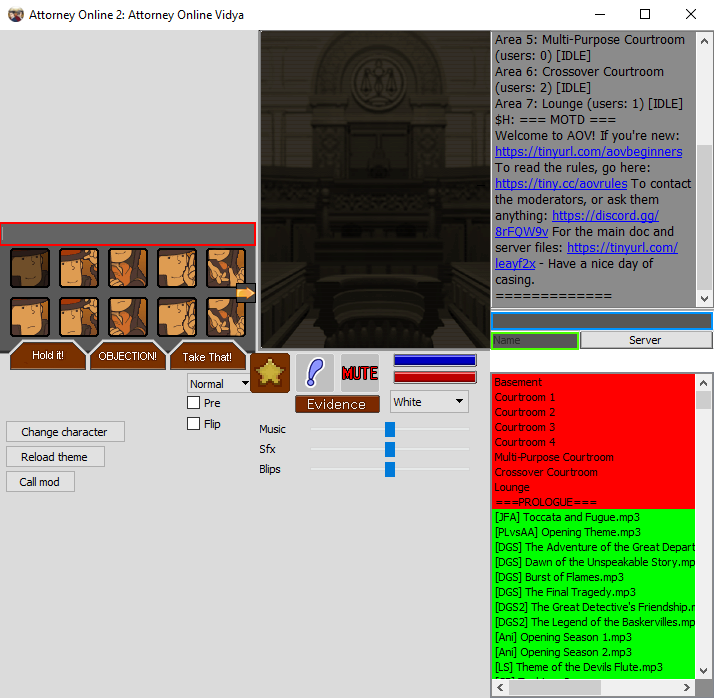
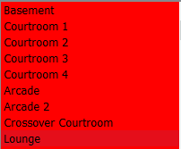

FAQs and Other Links
What is Ace Attorney Online? What is Attorney Online Vidya?
Attorney Online is a client designed to enact Ace Attorney styled courtroom cases and dramas, primarily. Attorney Online Vidya is an Ace Attorney Online community originating from 4chan, with additional formats and rooms supporting games such as Mafia/Werewolf, and Danganronpa-styled Class Trials.
Okay, I’ve downloaded the client. How do I get onto Attorney Online Vidya?
Simply click on our name in the client server list, or add 168.235.103.247:50001:Attorney Online Vidya (Dedicated) to the serverlist text document found inside the base folder where you store your client, then go to the “Favorites” tab in-client.
I just joined, and clicked one of the icons with the characters in them. What’s going on now?
You should be seeing something similar to the image below. First, input a name in the green highlighted box. This can be a temporary name, or something you’d rather go by. The blue highlighted box is the “OOC” or “Out of character” chat - feel free to talk in here any time. The red highlighted box is the in character chat: when you type something here and enter it, your character will say what you typed, using the emote you currently have selected; change emotes with the icon buttons underneath the in character chat.
The icon buttons are blank / everyone I’m speaking to is just a weird shape / the music list on the bottom right is all red and nothing’s playing. Help!
You didn’t install our files correctly. Go to tinyurl.com/leayf2x, then click on “Downloads”. From there, make sure you have all of our files. The full download contains all of our updates not highlighted in purple on that page. The Base Game (No Music) download is all of our characters, backgrounds, etc. without our music files. The Music Only download is our music without any other files. Merge the “base” folder you find in the downloads with the “base” folder where you store your client, and hit “Reload theme” in client to refresh. You should now be up to date!
Can I play on Linux?
Yes, but you really shouldn’t. The client was made for Windows, and you may encounter issues on Linux.
Okay, so what am I doing in the server? Where am I?
If you just joined, you will have entered the “Basement” area. The “Basement” is our landing zone, and is used for spamming, testing, and general nonsense. In order to change areas, find the list in your client that looks like the image below, and double click to change areas.
Each area serves a different purpose, as according to the table below.
| Area 0 (Basement) |
The basement serves as the server’s landing zone, that you enter as a default each time you visit. This area is used for testing new content and spamming. IC chat is not limited here. |
|---|---|
| Area 1-4 (Courtrooms) |
The courtrooms are where the main bulk of the server gameplay takes place. In the courtrooms, players roleplay in Ace Attorney styled courtroom dramas, and investigations. Make sure to ask in OOC if a case is happening before you talk IC here. |
| Area 5-6 (Arcades) |
The arcades are where non-standard formats, such as Mafia/Werewolf and Zero Time Dilemma styled games, take place. |
| Area 7 (Crossover Court) |
The crossover courtroom is the custom content courtroom; players can create their own unofficial sprite sets and characters, such as the bulk of the cast from the Danganronpa games, and use them here. Danganronpa-styled class trials, and regular courtroom cases using custom characters, are often found here. |
| Area 8 (Lounge) |
A laid back area that doesn't have the same enviroment as the basement. This is an area to chat with other players and talk to the mods if they happen to be in there. No casing or long form games should be done here. |
Alright, I’ve got everything sorted. How do I start playing?
Start by spectating a few cases, and asking people for advice. Players are usually more than happy to help you to start playing properly, and will share advice with you when possible.
I want to use a character that’s already in use. What do I do?
If the player on the character is already in the case you want to sign up for, there’s nothing you can do, really. If they aren’t in the case, you have a few options. First, politely ask them to change character. If they don’t speak at all, they might be AFK. Ask other players if that person is AFK; if they are, call a mod, and the mod can move that player to another area so that you can choose that character. If the player does respond but won’t relinquish the character, you can ini swap. To do this, note down the folder name of the character you want, then go to the folder of the character you’re currently playing, and open the char.ini file in that folder. Change the “name” section to match the folder name of the character you want, then hit “Reload theme”.
Someone’s hurting my feelings and/or saying bad things. Can mods help?
First, refer to the rules for what can be and can’t be considered rule breaking. Mods will only assist if a player is doing something that cannot be solved by simply muting them. This includes spamming massive walls of text, or using the “Witness testimony” and “Cross-examination” buttons repeatedly. Note that spamming in the basement is allowed, within reason. Persistent and malicious bullying will not be tolerated, however.
How can I contact mods in private?
Check the mod staff discord, found in our MOTD on the server.
Why is the server down?
One of multiple possible reasons. Ask on the mod discord!
I’ve noticed some characters aren’t on the selection screen. How do I play them?
Through ini editing, the same process described earlier to select characters already selected by other players.
What are the statuses next to each area?
BUILDING-OPEN denotes that area is building a document, and there are slots open to play in. BUILDING-FULL means that area is building a document, but all the slots are full. CASING-OPEN means that area is currently playing, but there are slots available to enter mid-game. CASING-FULL means that area is currently playing, but it is full so you cannot join. IDLE means nothing is currently being built in that area.
What are the server commands?
Type /help in client to find out!
What does mod call do?
The mod call button calls a moderator to your current area to deal with a problem you may have. Pressing this button with the intent to call a mod without a good reason can result in a warning.
What do the different text colors mean in the IC chat?
There aren’t really any defined uses for the text colors, but popular use has given them each a different meaning. White is standard text, blue usually denotes thinking and internal speech, green denotes an important statement or given testimony by a witness, yellow denotes robotic speech, orange denotes state actions and/or evidence. Red text can only be used by a moderator, however, so if you see it, the contents of the message will generally be important and/or official.
I want to suggest something. Where do I go?
If you want to suggest something for the server, you should suggest it on the Suggestions document or in the mod discord depending on the nature of it. If you want to suggest a character/music track/background/etc for the server, however, you should add it to the poll document for it to be polled.
How do I vote?
After inputting a name in the OOC name box in-client, type /vote, then the number of what you want to vote on, based on the given options. Type yes or no to vote either way.
Other Links
(Otherwise known as the stuff that didn't deserve it's own page.)
Ini Editing Guide
Content Creation Center (Outdated)
Case Archive
Legacy Case Archive
AO2 Theme Library
Alternate Skins/Emotes/Audio Library
Crossover Court Content
8chan Board